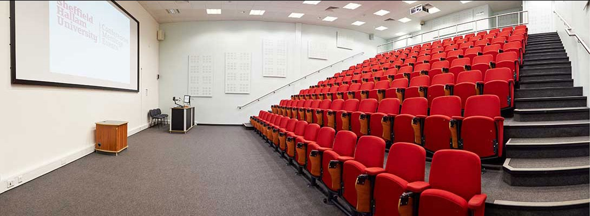

Explore Cantor College: World-Class Facilities for Your Success

At Cantor College, we are committed to providing our students with the best possible environment to learn, create, and innovate. Our state-of-the-art facilities are designed to support your academic journey and help you thrive in your chosen field. Whether you’re studying computing, design, or technology, our campus offers everything you need to excel.
 At Cantor College,
we believe in the power of collaboration between education and industry. Our College offers a range of specialized services designed
to support businesses in achieving their goals through cutting-edge expertise, innovation, and tailored solutions. With a focus on
Computing, Design, and Technology, we are uniquely positioned to help your business thrive in an increasingly digital world.
At Cantor College,
we believe in the power of collaboration between education and industry. Our College offers a range of specialized services designed
to support businesses in achieving their goals through cutting-edge expertise, innovation, and tailored solutions. With a focus on
Computing, Design, and Technology, we are uniquely positioned to help your business thrive in an increasingly digital world.
The College is located in the attractive and pleasantly refurbished Building. The building houses computing laboratories, and lecture/tutorial rooms. It has its own catering facilities and student work areas. There is also a car park to the back of the building.
Our building has space of 9500m², houses over 240 staff and provides teaching space for more than 1600 students.